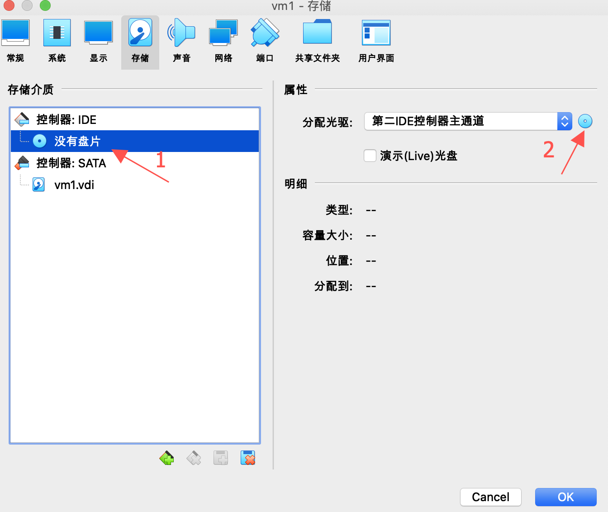
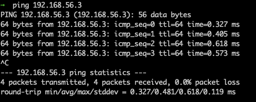

如何搭建一个本地服务器集群
如今，单机服务器的时代已经过去了，部署任何服务，如果不多加几台服务器，就没办法让人心安。
而且在本地自己学习测试的时候，也经常需要用到服务器集群，比如搭建一个 MySQL 集群，一个 Redis 集群，一个 HDFS 集群，但是为了测试就买云服务器未免有些太奢侈了，所以搭建本地集群是一种既经济又实惠的方式。
这篇文章介绍一种在本地搭建服务器集群的方法。
软硬件要求：
- 一台电脑（系统不限，配置高一点更好）
- VirtualBox
- Centos7
VirtualBox 提供了各个系统的安装版本，下载完成后，直接点击软件包进行安装即可，不再赘述。
Centos 可以选择自己需要的版本，或者 Linux 的其他发行版本也行，注意要选择 Minimal 版本，用作服务器，不需要桌面之类的，这样服务器镜像的体积就可以很小。
本文搭建搭建 centos 集群的目标如下：
- 使用虚拟机搭建一个拥有三台服务器的集群
- 三台虚拟机都可以与宿主机互相访问
- 三台虚拟机都可以访问外网
- 三台机器之间可以不需要输入密码直接使用 ssh 连接
本文基于 Mac os 10.15.5，VirtualBox6.1.8，centos7，另外阅读本文需要有一些基本的网络知识
安装服务器
在开始之前，需要在 VirtualBox 的全局配置上加一块网卡，如下图所示：
在这里需要注意的是 IPv4 的地址和网络掩码，IPv4 地址就会成为整个服务器集群的网关，通常情况下不需要修改（如果你对计算机网络如数家珍，那轻便，随便改），设置好网关和子网掩码之后，后续配置的虚拟机 IP 都需要在这个网段内。
然后就可以创建一个虚拟机，名字随便设置，选择好目标文件夹，用来存储虚拟机的相关文件。
我们要安装的 centos7 是 Linux，所以虚拟机类型选择 Linux，版本选择里面并没有 Centos 的选项，那么选择 Red Hat(64-bit) 就可以了：
配置完成后就要给虚拟机分配内存，按照自己的电脑配置就行选择，基本上 2G 左右就可以了：
然后就是创建虚拟硬盘，由于是无图形界面的 Centos系统，默认的配置也够用了：
到这里，虚拟机就创建好了，接下来要为虚拟机提供系统的启动镜像，选中虚拟机，点击设置：
再点击存储：
选择下载好的镜像：

再选择网络，默认情况下只启用了一块网卡，为了满足后续的需求，我们需要再开启一块网卡：
选择 host-only 模式：
点击 ok 保存配置，然后就可以启动虚拟，第一次启动会安装系统，安装的过程中设置 root 密码，虚拟机的安装就完成了。
为了组成一个服务器集群，我们需要三个虚拟机，另外两台的安装方式和上面一样。
网络配置
在本文中，我使用 NAT + host-only 的方式来完成虚拟机既能访问外部网络，宿主机也能访问虚拟机的网络配置，但这不是唯一的方式。
刚安装好的虚拟机无法访问外部网络，这是因为虚拟机的网卡还没有开启，先进入到虚拟机开启网卡，让虚拟机可以通过 NAT 的方式访问外网，然后使用 host-only 的方式实现宿主机访问虚拟机。
使用 root 身份登录进系统，进入到网络的配置目录:
cd /etc/sysconfig/network-scripts/
如果前面配置没有出错的话，在这里可以看到两个网卡的配置的：
ifcfg-enp0s3 就对应 NAT 配置的那张网卡，ifcfg-enp0s8 就对应 host-only 配置的网卡。
先来配置 NAT 网络，使用 vi 打开 ifcfg-enpos3 配置:
vi 是 Linux 系统自带的一个编辑器
把 ONBOOT 的值改成 yes 就可以，表示开机启用这个网卡，配置完 NAT 之后，就可以在虚拟机内访问互联网了。
再来配置一下 host-only 网络：
首先要把网络从 dhcp 自动获取 ip 改成 static，再同样设置 ONBOOT 为 yes，IPADDR 指定这台虚拟机的固定 IP，IP 可以随意设置，但是要在这个网段内，NETMASK 配置的是这个网络的网络掩码。
最后配置一下网关:
vi /etc/sysconfig/networking
填入以下内容：
NETWORKING=yes
GATEWAY=192.168.56.2 # 这个值就是在配置 VirtualBox 全局网卡时的网关的 IP，不要配错了
这些都配置完成之后，重启网络服务:
service network restart
然后访问外网:
宿主机访问虚拟机:

单台的网络已经配置好了，另外两台按照同样的配置就行，但需要为虚拟机配置不同的 IP。
在本文的例子中，三台虚拟机的 IP 为： 192.168.56.3 192.168.56.4 192.168.56.5
服务器互联
到这里，三台服务器都能够连接互联网，宿主机也可以访问虚拟机了，虚拟机之间也可以通过 ssh 连接输入密码后进行访问。
但是很多时候服务器之间需要能够直接传输文件，如果每次还需要输入密码，那就太不方便了。
机器之间登录还是使用 ssh，但是可以改良一下，每台服务器把其他两台设置为信任的机器，这样就可以直接登录，而不用每次都输入密码。
以 IP 为 192.168.56.3 的虚拟机为例，通过 ssh-keygen 生成公钥和密钥:
然后使用 ssh-copy-id 将公钥拷贝到像免密登录的机器：
然后就可以免密登录了：
ssh root@192.168.56.4
ssh root@192.168.56.5
另外两台机器进行同样的配置，然后三台虚拟机之间就可以相互免密访问。
到这里，本地服务器集群就搭建完毕了。